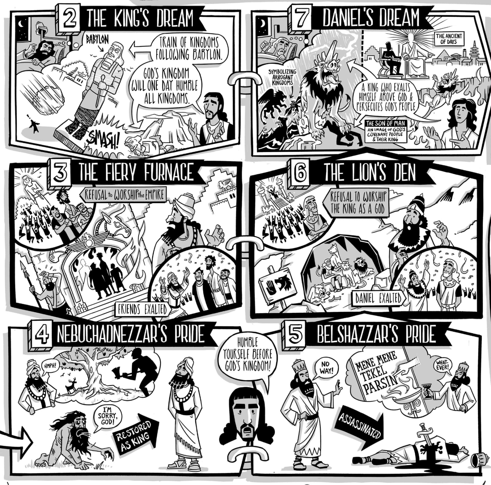
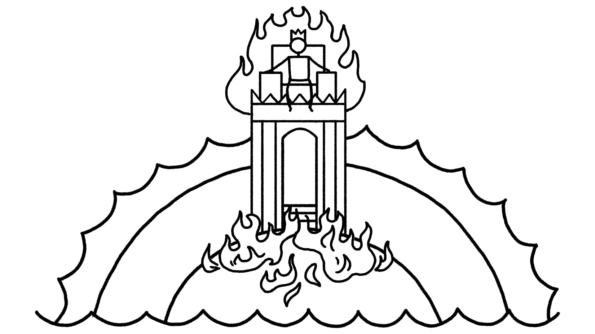

Em Gênesis 1:26-28, é-nos dito que a humanidade, macho e fêmea juntos, constituem a imagem real de Deus. Deus nomeia a humanidade para governar o mundo em seu nome e receber a sua bênção enquanto se multiplicam numa terra de abundância. Gênesis 1 é um modelo para toda a história bíblica. Este primeiro capítulo nos mostra o design ideal de Deus para o seu mundo: parceiros humanos reais, os reis e rainhas da criação, governando juntos num mundo abundante durante o eterno descanso do sétimo dia. Gênesis 2-5 nos conta sobre os primeiros personagens humanos a quem é dada a oportunidade de governar juntos como a imagem de Deus. Infelizmente, esses humanos tolaamente perdem os seus papéis divinos. Eles são enganados por uma serpente e escolhem definir o bem e o mal nos seus próprios termos em vez de agir “no temor de Yahweh.” Em Gênesis 3:14-15, Deus diz que vai humilhar a serpente (“você comerá pó todos os dias da sua vida,” Gn. 3:14) e que uma “semente da mulher” vai “esmagar” a cabeça da serpente um dia enquanto a serpente fere o calcanhar da semente da mulher (Gn. 3:15).In Genesis 1:26-28, we are told that humanity, male and female together, constitute the royal image of God. God appoints humanity to rule the world on his behalf and receive his blessing as they multiply in a land of abundance. Genesis 1 is a template for the entire biblical story. This first chapter shows us God’s ideal design for his world: royal human partners, the kings and queens of creation, ruling together in an abundant world during the eternal seventh-day rest. Genesis 2-5 tells us about the first human characters who are given the opportunity to rule together as God’s image. Unfortunately, these humans foolishly forfeit their divine roles. They are deceived by a snake and choose to define good and bad on their own terms instead of acting “in the fear of Yahweh.” In Genesis 3:14-15, God says he is going to humiliate the snake (“you will eat dust all the days of your life,” Gen. 3:14) and that a “seed of the woman” is going to “strike” the snake’s head one day while the snake strikes the heel of the woman’s seed (Gen. 3:15).
semelhança por analogia ao relacionamento de Adão com Deus. A analogia ilumina em ambas as direções. 1. Se Sete é o “filho de Adão” e pode ser chamado a imagem de Adão, então ’adam também pode ser pensado como o “filho de Deus,” que se torna um sinônimo para “imagem de Deus.” Bônus: Observe que a genealogia de Jesus em Lucas é construída sobre esta mesma convicção, traçando Jesus como “filho de Deus” todo o caminho de volta a Adão como “filho de Deus” (veja Lucas 3:23-38). 2. Visto que ’adam (consistindo de macho e fêmea) era a imagem de Deus chamada a representar Deus no mundo, Sete e os seus descendentes também são identificados com a promessa de Gênesis 3:14-15. Esta promessa descreve uma semente futura que subjugará a serpente, governará o mundo em nome de Deus, e desfará o que aconteceu em Gênesis 3:1-7. Bônus: A conexão entre uma semente futura da mulher e a vitória sobre a serpente é exatamente como os apóstolos vieram a ver Jesus como o vencedor sobre a morte (veja 1 João 3:7-8). Estas ideias em Gênesis 1-5 são o modelo para narrativas posteriores na Bíblia Hebraica que mostram governantes humanos como novos Adãos a quem é dada a chance de serem imagens de Deus, governarem o mundo em nome de Deus, e superarem as forças do caos semelhante a animais no mundo. O Sumo Sacerdote É a Imagem de Deus: Êxodo 25-40 “No templo e tabernáculo de Israel, o papel da estátua de culto é desempenhado pelo sumo sacerdote que é a imagem visível e concreta do criador dentro do templo como microcosmo.” Fletcher-Louis, Crispin (2004). “God’s Image, His Cosmic Temple, and the High Priest: Towards an Historical and Theological Account of the Incarnation.” Heaven on Earth: The Temple in Biblical Theology. Paternoster. 89. Deus em Gênesis 1likeness on analogy to Adam’s relationship to God. The analogy illuminates in both directions. 1. If Seth is the “son of Adam” and can be called the image of Adam, then ’adam too can be thought of as the “son of God,” which becomes a synonym for “image of God.” Bonus: Notice that Luke’s genealogy of Jesus is constructed on this very conviction, tracing Jesus as “son of God” all the way back to Adam as “son of God” (see Luke 3:23-38). 2. Since ‘adam (consisting of male and female) was the image of God called to represent God in the world, Seth and his descendants are also identified with the promise of Genesis 3:14-15. This promise describes a future seed who will subdue the snake, rule the world on God’s behalf, and undo what happened in Genesis 3:1-7. Bonus: The connection between a future seed of the woman and the victory over the snake is exactly how the apostles came to see Jesus as the victor over death (see 1 John 3:7-8). These ideas in Genesis 1-5 are the template for later narratives in the Hebrew Bible that show human rulers as new Adams who are given the chance to be images of God, rule the world on God’s behalf, and overcome the forces of animal-like chaos in the world. The High Priest Is the Image of God: Exodus 25-40 “In Israel’s temple and tabernacle, the role of the cult statue is played by the high priest who is the visible and concrete image of the creator within the temple as microcosm.” Fletcher-Louis, Crispin (2004). “God’s Image, His Cosmic Temple, and the High Priest: Towards an Historical and Theological Account of the Incarnation.” Heaven on Earth: The Temple in Biblical Theology. Paternoster. 89. God in Genesis 1
A criação acontece em sete dias marcados por sete atos divinos de fala (Gn. 1:1-2:3). As plantas do tabernáculo são reveladas em sete atos de fala divina (Êx. 25-31). O tabernáculo é um micro- cosmos do mundo criado em Gênesis 1. A luz divina de Deus separa entre trevas e luz, tarde e manhã (Gn. 1:3-5). Arão deve acender a menorá todas as tardes e manhãs, para criar luz no tabernáculo (Êx. 27:20-21; 30:7-8). O sacerdote desempenha o papel do criador no palco cúltico, recriando a obra de Deus do primeiro dia. Gênesis 1 e o Sumo Sacerdote em Êxodo. Criado por Tim Mackie para BibleProject Classroom: Heaven and Earth (2020).Creation takes place in seven days marked by seven divine acts of speech (Gen. 1:1-2:3). The tabernacle blueprints are revealed in seven acts of divine speech (Exod. 25-31). The tabernacle is a micro- cosmos of the world created in Genesis 1. God’s divine light separates between darkness and light, evening and morning (Gen. 1:3-5). Aaron is to light the menorah every evening and morning, to create light in the tabernacle (Exod. 27:20-21; 30:7-8). The priest plays the role of the creator on the cultic stage, recreating God’s work of the first day. Genesis 1 and the High Priest in Exodus. Created by Tim Mackie for BibleProject Classroom: Heaven and Earth (2020).
Deus em Gênesis 1God in Genesis 1
Deus introduziu “luz” ( אור) na criação, que é “completada” no sétimo dia. O sumo sacerdote é ordenado numa cerimônia de sete dias onde ele veste o éfode dourado com as pedras de “luzes” (אורים) e “completações” (תמים) (Êx. 28:6-30). O sumo sacerdote nas suas vestes radiantes é a personificação da luz e do poder de Deus para trazer ordem completa à criação. Gênesis 1 e o Sumo Sacerdote em Êxodo. Criado por Tim Mackie para BibleProject Classroom: Heaven and Earth (2020). Josué como um Novo Moisés: Josué 1-12 Josué é retratado como um novo Moisés liderando Israel para a terra prometida semelhante ao Éden. Ele é chamado a confrontar as forças do mal na terra e seguir a sabedoria de Deus conforme definida pela Torá.God introduced “light” ( אור) into creation, which is “completed” on the seventh day. The high priest is ordained in a seven- day ceremony where he wears the golden ephod with the stones of “lights” (אורים) and “completions” (תמים) (Exod. 28:6-30). The high priest in his radiant clothing is the embodiment of God's light and power to bring complete order to creation. Genesis 1 and the High Priest in Exodus. Created by Tim Mackie for BibleProject Classroom: Heaven and Earth (2020). Joshua as a New Moses: Joshua 1-12 Joshua is portrayed as a new Moses leading Israel into the Eden-like promised land. He is called to confront the forces of evil in the land and follow God’s wisdom as defined by the Torah.
Em Josué 2-8, vemos os episódios do Jordão, Jericó e Ai. Josué lidera os israelitas à vitória sobre Jericó imitando a estratégia de criação de Deus de Gênesis 1 (seis dias de trabalho e um dia de descanso).In Joshua 2-8, we see the Jordan, Jericho, and Ai episodes. Joshua leads the Israelites to victory over Jericho by imitating God’s creation strategy from Genesis 1 (six days of work and one day of rest).
diretamente em frente.” ... 12 Ora, Josué levantou-se cedo pela manhã, e os sacerdotes tomaram a arca do SENHOR. 13 Os sete sacerdotes que carregavam as sete trombetas de chifres de carneiros diante da arca do SENHOR iam continuamente, e sopravam as trombetas; e os homens armados iam diante deles e a retaguarda vinha depois da arca do SENHOR, enquanto continuavam a soprar as trombetas. 14 Assim, no segundo dia, marcharam ao redor da cidade uma vez e voltaram ao acampamento; fizeram assim por seis dias. 15 Então, no sétimo dia, levantaram-se cedo ao amanhecer do dia e marcharam ao redor da cidade da mesma maneira sete vezes; somente naquele dia marcharam ao redor da cidade sete vezes. 16 Na sétima vez, quando os sacerdotes sopraram as trombetas, Josué disse ao povo: “Gritai! Pois o SENHOR vos deu a cidade.” ... 20 Então o povo gritou, e os sacerdotes sopraram as trombetas; e quando o povo ouviu o som da trombeta, o povo gritou com um grande grito e o muro caiu por terra, de modo que o povo subiu para a cidade, cada homem diretamente em frente, e tomaram a cidade. Duas narrativas de fracasso seguem logo após a vitória de Josué sobre Jericó. Acã toma despojos proibidos (Js. 7), e Josué é enganado pelos gibeonitas antes de superar as alianças dos reis (Js. 9-10).straight ahead.” ... 12 Now Joshua rose early in the morning, and the priests took up the ark of the LORD. 13 The seven priests carrying the seven trumpets of rams’ horns before the ark of the LORD went on continually, and blew the trumpets; and the armed men went before them and the rear guard came after the ark of the LORD, while they continued to blow the trumpets. 14 Thus the second day they marched around the city once and returned to the camp; they did so for six days. 15 Then on the seventh day they rose early at the dawning of the day and marched around the city in the same manner seven times; only on that day they marched around the city seven times. 16 At the seventh time, when the priests blew the trumpets, Joshua said to the people, “Shout! For the LORD has given you the city.” ... 20 So the people shouted, and priests blew the trumpets; and when the people heard the sound of the trumpet, the people shouted with a great shout and the wall fell down flat, so that the people went up into the city, every man straight ahead, and they took the city. Two failure narratives follow right after Joshua’s victory over Jericho. Achan takes forbidden plunder (Josh. 7), and Joshua is deceived by the Gibeonites before overcoming the alliances of kings (Josh. 9-10).
os seus pescoços. 25 Josué então lhes disse: “Não temais nem fiqueis desanimados! Sê forte e corajoso, pois assim o SENHOR fará a todos os vossos inimigos contra quem lutais.” Josué É o Modelo para o “Abençoado” no Salmo 1 O “abençoado” do Salmo 1 é retratado, como o Josué ideal em Josué 1:7-8, como alguém que medita na Torá dia e noite, o que resulta em sucesso e prosperidade.their necks. 25 Joshua then said to them, “Do not fear or be dismayed! Be strong and courageous, for thus the LORD will do to all your enemies with whom you fight.” Joshua Is the Template for the “Blessed One” in Psalm 1 The “blessed one” of Psalm 1 is portrayed, like the ideal Joshua in Joshua 1:7-8, as someone who mediates on the Torah day and night, which results in success and prosperity.
ele me disse: ‘Tu és o meu Filho, hoje eu te gerei. 8 ‘Pede-me, e eu certamente darei as nações como tua herança, e as extremidades da terra como tua possessão. 9 ‘Tu os quebrarás com uma vara de ferro, tu os despedaçarás como vaso de oleiro.’” 10 Agora, portanto, ó reis, mostrai discernimento; tomai aviso, ó juízes da terra. 11 Adorai o SENHOR com reverência e alegrai-vos com tremor. 12 Prestai homenagem ao Filho, para que ele não se ire, e pereçais no caminho, pois a sua ira pode logo se acender. Quão abençoados são todos os que nele se refugiam!he said to me, ‘You are my Son, today I have begotten you. 8 ‘Ask of me, and I will surely give the nations as your inheritance, and the very ends of the land as your possession. 9 ‘You shall break them with a rod of iron, you shall shatter them like earthenware.’” 10 Now therefore, O kings, show discernment; take warning, O judges of the earth. 11 Worship the LORD with reverence and rejoice with trembling. 12 Do homage to the Son, that he not become angry, and you perish in the way, for his wrath may soon be kindled. How blessed are all who take refuge in him!
Este poema retrata as nações rebeldes conspirando contra Yahweh e o seu ungido, assim como os reis cananeus rebeldes conspiravam continuamente em Josué 5-12. A “terra prometida” de Josué aqui se torna a “herança das nações.” O destino das nações depende de se humilharem ou não diante do filho ungido de Deus. Se não, perecerão “no caminho” (assim como o “caminho dos ímpios” no Sl. 1). Mas se “beijarem o filho” e se refugiarem nele, encontrarão a bênção de Deus. Daniel 7 Retrata “Um como um Filho do Homem” Que É Exaltado da TerraThis poem depicts the rebellious nations plotting against Yahweh and his anointed just like the rebellious Canaanite kings were continuously plotting in Joshua 5-12. Joshua’s “promised land” here becomes the “inheritance fo the nations.” The destiny of the nations turns on whether or not they will humble themselves before the anointed son of God. If not, they will “perish in the way” (just like the “way of the wicked” in Ps. 1). But if they “kiss the son” and take refuge in him, they will find God’s blessing. Daniel 7 Depicts “One Like a Son of Man” Who Is Exalted From Earth
Em Daniel 1:1-3, aprendemos que Daniel é da “semente real” (lit. “semente do reino”), isto é, da linhagem de Davi. Ele é levado para a Babilônia na primeira onda de exilados de Jerusalém. Em Daniel 2-7, temos uma teologia totalmente elaborada da “imagem de Deus” representada pelo sacerdócio real de Deus que foi exilado para a terra das imagens reais idólatras. BibleProject (2016). Overview: Daniel.In Daniel 1:1-3, we learn that Daniel is of the “royal seed” (lit. “seed of the kingdom”), that is, from the line of David. He is taken into Babylon in the first wave of exiles from Jerusalem. In Daniel 2-7, we have a fully worked out theology of the “image of God” represented by God’s royal priesthood who has been exiled to the land of idolatrous royal images. BibleProject (2016). Overview: Daniel.
O Filho do Homem em Daniel 9. Ilustração criada por Tim Mackie para BibleProject Classroom: Heaven and Earth (2019). Jesus como a Imagem de Deus e Filho de Deus Em Lucas 3-4, Jesus é retratado como um novo Adão, o real e sacerdotal Filho de Deus. Em Colossenses 1-3, Jesus é explicitamente chamado “a imagem de Deus.” Ele é o segundo eu de Deus, o humano real e divino que agora está ressuscitado e governando o cosmos. Note que a nova humanidade de Jesus está agora disponível ao seu povo, para que eles também estejam sendo renovados na imagem de Deus.The Son of Man in Daniel 9. Illustration created by Tim Mackie for BibleProject Classroom: Heaven and Earth (2019). Jesus as the Image of God and Son of God In Luke 3-4, Jesus is depicted as a new Adam, the royal and priestly Son of God. In Colossians 1-3, Jesus is explicitly called “the image of God.” He is God’s second self, the royal and divine human who is now risen and ruling the cosmos. Notice that the new humanity of Jesus is now available to his people, so they are being renewed in the image of God as well.
para que ele próprio viesse a ter o primeiro lugar em tudo. 19 Pois nele , [Deus] se agradou que toda a plenitude habitasse 20 e através dele reconciliar todas as coisas consigo mesmo , coisas na terra ou coisas no céu , tendo feito a paz através do sangue da sua cruz.so that he himself might come to have first place in everything. 19 For in him , [God] was pleased that all the fullness would dwell 20 and through him to reconcile all things to himself , things on earth or things in heaven , having made peace through the blood of his cross.
Por que Daniel 7 é um capítulo tão significativo para entender a imagem de Deus?Why is Daniel 7 such a significant chapter for understanding the image of God?


em Gênesis 1 SESSÕES 30-31 Mergulhe no tempo e na escatologia em Gênesis 1 e termine a aula com força!in Genesis 1 SESSIONS 30-31 Dive into time and eschatology in Genesis 1 and finish the class strong!